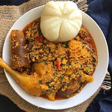

Pounded Yam Recipe

Ingredients
- 1 medium yam
- Water
- Salt
- Egusi soup
- 5 tomatoes, 5 peppers and 1 big onion(Grated)
- 1 tin Grinded Egusi
- 1 serving spoon each of palm oil and veg oil
- 2 bunches spinach or ugwu washed and sliced
Steps
- Peel the yam, slice and wash and cook with water and salt till completely soft.
- Using a mortar and pestle pound the yam till soft and sticky, sprinkling the yam water at intervals
- Mould into desired shape and size..... Keep aside
- For the soup
- Mix the egusi with water to form a paste
- Add the oil into the pot and fry the grinded pepper mix for 5mins, scoop out, add little oil and add the egusi mix gradually in ball
- Fry for 3 mins, add the fried pepper mix and water, salt, pkomo, seasoning and curry
- Allow to cook for 30 mins, add in the cray fish cook for 5 more mins then finally add ginger/garlic paste and sliced spinach and spring onion
- Allow it to steam for 5 mins....ready to serve for lunch or dinner😋🤤
Homepage